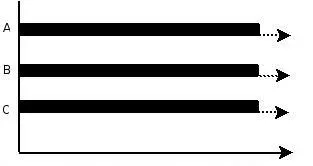
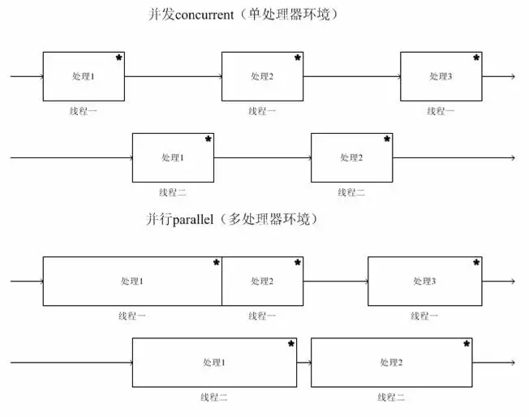
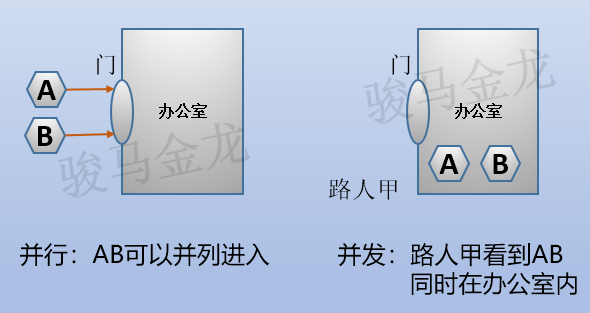
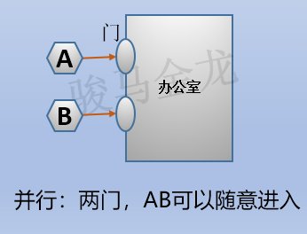
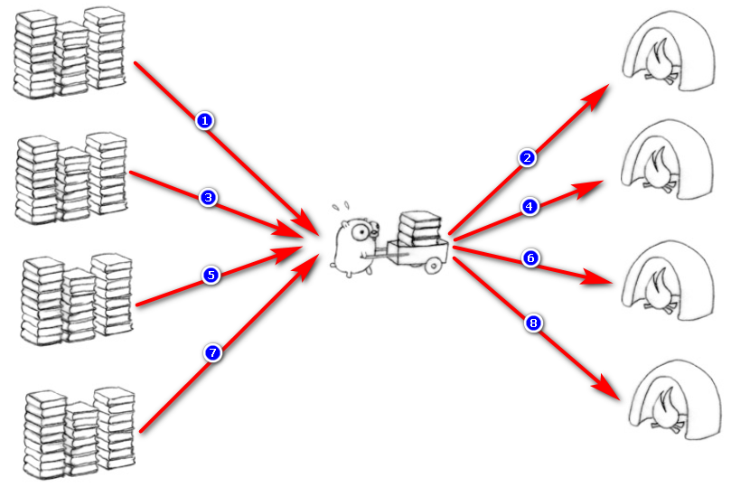
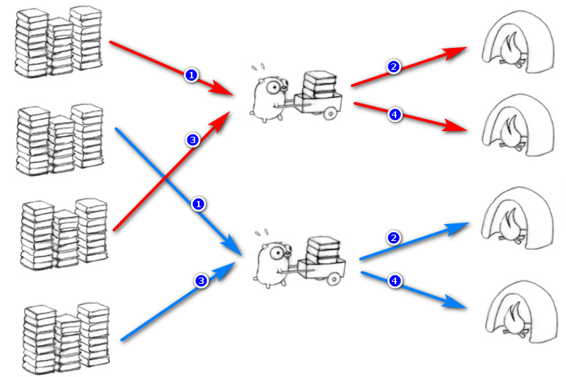
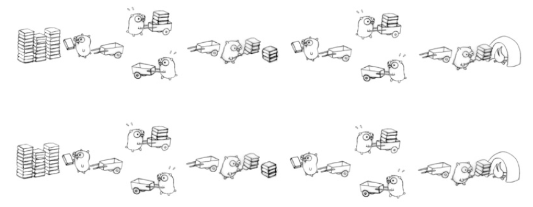

并发和并行
并发（concurrency）和并行（parallellism）是：
- 解释一：并行是指两个或者多个事件在同一时刻发生；而并发是指两个或多个事件在同一时间间隔发生。
- 解释二：并行是在不同实体上的多个事件，并发是在同一实体上的多个事件。
- 解释三：并行是在一台处理器上“同时”处理多个任务，并发是在多台处理器上同时处理多个任务。如 hadoop 分布式集群。 所以并发编程的目标是充分的利用处理器的每一个核，以达到最高的处理性能。
并行
并行(parallel)：指在同一时刻，有多条指令在多个处理器上同时执行。所以无论从微观还是从宏观来看，二者都是一起执行的。

并发
并发(concurrency)：指在同一时刻只能有一条指令执行，但多个进程指令被快速的轮换执行，使得在宏观上具有多个进程同时执行的效果，但在微观上并不是同时执行的，只是把时间分成若干段，使多个进程快速交替的执行。

并行在多处理器系统中存在，而并发可以在单处理器和多处理器系统中都存在，并行能够在单处理器系统中存在是因为并发是并行的假象，并行要求程序能够同时执行多个操作，而并发只是要求程序假装同时执行多个操作（每个小时间片执行一个操作，多个操作快速切换执行）。
当有多个线程在操作时，如果系统只有一个 CPU，则它根本不可能真正同时进行一个以上的线程，它只能把 CPU 运行时间划分成若干个时间段，再将时间段分配给各个线程执行，在一个时间段的线程代码运行时,其它线程处于挂起状态.这种方式我们称之为并发（Concurrent）。
当系统有一个以上 CPU 时，则线程的操作有可能非并发。当一个 CPU 执行一个线程时，另一个 CPU 可以执行另一个线程，两个线程互不抢占 CPU 资源，可以同时进行，这种方式我们称之为并行（Parallel）

参考
并发和并行
理解并发、并行的例子
先举例子来理解这2个概念的区别。
老师让两个同学去办公室谈话。如果这两同学(进程)是并列跨过办公室门(CPU)的，那么就是并行。如果同学A先进同学B后进入(或者先B后A)，或者两人并列同时进入，但是在办公室外的路人甲(用户)看来，同学A和同学B同时都在办公室内，这是并发。

其实这个例子不合理，因为真正的并行是多核CPU下的概念，但上面这个简单的例子非常有助于理解。
如果举例要精确一点，那么大概是这样的：进办公室有两个门(两CPU)，如果两同学分别从不同的门进入，不管先后性，两者互相独立，那么是并行；如果两同学不管以什么方式进入，在路人甲看来，他两同时都在办公室内，就是并发。

并发和并行的理论性解释
为什么操作系统上可以同时运行多个程序而用户感觉不出来？
这是因为无论是单CPU还是多CPU，操作系统都营造出了可以同时运行多个程序的假象。实际的过程操作系统对进程的调度以及CPU的快速上下文切换实现的：每个进程执行一会就先停下来，然后CPU切换到下个被操作系统调度到的进程上使之运行。因为切换的很快，使得用户认为操作系统一直在服务自己的程序。
再来解释并发就容易理解多了。
并发(concurrent)指的是多个程序可以同时运行的现象，更细化的是多进程可以同时运行或者多指令可以同时运行。但这不是重点，在描述并发的时候也不会去扣这种字眼是否精确，并发的重点在于它是一种现象。并发描述的是多进程同时运行的现象。但实际上，对于单核心CPU来说，同一时刻只能运行一个进程。所以，这里的"同时运行"表示的不是真的同一时刻有多个进程运行的现象，这是并行的概念，而是提供一种功能让用户看来多个程序同时运行起来了，但实际上这些程序中的进程不是一直霸占CPU的，而是执行一会停一会。
所以，并发和并行的区别就很明显了。它们虽然都说是"多个进程同时运行"，但是它们的"同时"不是一个概念。并行的"同时"是同一时刻可以多个进程在运行(处于running)，并发的"同时"是经过上下文快速切换，使得看上去多个进程同时都在运行的现象，是一种OS欺骗用户的现象。
实际上，当程序中写下多进程或多线程代码时，这意味着的是并发而不是并行。并发是因为多进程/多线程都是需要去完成的任务，不并行是因为并行与否由操作系统的调度器决定，可能会让多个进程/线程被调度到同一个CPU核心上。只不过调度算法会尽量让不同进程/线程使用不同的CPU核心，所以在实际使用中几乎总是会并行，但却不能以100%的角度去保证会并行。也就是说，并行与否程序员无法控制，只能让操作系统决定。
再次注明，并发是一种现象，之所以能有这种现象的存在，和CPU的多少无关，而是和进程调度以及上下文切换有关的。
理解了概念，再来深入扩展下。
串行、并行和并发
 任务是将左边的一堆柴全部搬到右边烧掉，每个任务包括三个过程：取柴，运柴，放柴烧火。
任务是将左边的一堆柴全部搬到右边烧掉，每个任务包括三个过程：取柴，运柴，放柴烧火。
这三个过程分别对应一个函数：
func get { geting }
func carry { carrying }
func unload { unloading }
串行模式
串行表示所有任务都一一按先后顺序进行。串行意味着必须先装完一车柴才能运送这车柴，只有运送到了，才能卸下这车柴，并且只有完成了这整个三个步骤，才能进行下一个步骤。
和稍后所解释的并行相对比，串行是一次只能取得一个任务，并执行这个任务。
假设这堆柴需要运送4次才能运完，那么当写下的代码类似于下面这种时，那么就是串行非并发的模式：
for(i=0;i<4;i++){
get()
carry()
unload()
}
或者，将三个过程的代码全部集中到一个函数中也是如此：
func task {
geting
carrying
unloading
}
for(i=0;i<4;i++){
task()
}
这两种都是串行的代码模式。画图描述：

并行模式
并行意味着可以同时取得多个任务，并同时去执行所取得的这些任务。并行模式相当于将长长的一条队列，划分成了多条短队列，所以并行缩短了任务队列的长度。
正如前面所举的两同学进办公室的例子，串行的方式下，必须1个同学进入后第二个同学才进入，队列长度为2，而并行方式下可以同时进入，队列长度减半了。
并行的效率从代码层次上强依赖于多进程/多线程代码，从硬件角度上则依赖于多核CPU。
对于单进程/单线程，由于只有一个进程/线程在执行，所以尽管同时执行所取得的多个任务，但实际上这个进程/线程是不断的在多任务之间切换，一会执行一下这个，一会执行一下那个，就像是一个人在不同地方之间来回奔波。所以，单进程/线程的并行，效率比串行更低。
对于多进程/多线程，各进程/线程都可以执行各自所取得的任务，这是真正的并行。
但是，还需要考虑硬件层次上CPU核心数，如果只有单核CPU，那么在硬件角度上这单核CPU一次也只能执行一个任务，上面多进程/多线程的并行也并非真正意义上的并行。只有多核CPU，并且多进程/多线程并行，才是真正意义上的并行。
如下图，是多进程/多线程(2个工作者)的并行：

并发
并发表示多个任务同时都要执行的现象，更详细的概念前面已经说面的够具体了。
其实，很多场景下都会使用并发的概念。比如同时500个http请求涌向了web服务器，比如有时候说并发数是1000等。
有时候也将并发当成任务，比如500并发数意味着500个任务，表示的是在一个特定的时间段内(约定俗成的大家认为是1秒)可以完成500个任务。这500个任务可以是单进程/单线程方式处理的，这时表示的是并发不并行的模式(coroutine就是典型的并发不并行)，即先执行完一个任务后才执行另一个任务，也可以是多进程/多线程方式处理的，这时表示的是并发且并行模式。
要解决大并发问题，通常是将大任务分解成多个小任务。很典型的一个例子是处理客户端的请求任务，这个大任务里面包含了监听并建立客户端的连接、处理客户端的请求、响应客户端。但基本上所有这类程序，都将这3部分任务分开了：在执行任何一个小任务的时候，都可以通过一些手段使得可以执行其它小任务，比如在处理请求的时候，可以继续保持监听状态。
由于操作系统对进程的调度是随机的，所以切分成多个小任务后，可能会从任一小任务处执行。这可能会出现一些现象：
可能出现一个小任务执行了多次，还没开始下个任务的情况。这时一般会采用队列或类似的数据结构来存放各个小任务的成果。比如负责监听的进程已经执行了多次，建立了多个连接，但是还没有调度到处理请求的进程去处理任何一个请求。
可能出现还没准备好第一步就执行第二步的可能。这时，一般采用多路复用或异步的方式，比如只有准备好产生了事件通知才执行某个任务。比如还没有和任何一个客户端建立连接时，就去执行了处理请求的进程。 可以多进程/多线程的方式并行执行这些小任务。也可以单进程/单线程执行这些小任务，这时很可能要配合多路复用才能达到较高的效率
看图非常容易理解：
 上图中将一个任务中的三个步骤取柴、运柴、卸柴划分成了独立的小任务，有取柴的老鼠，有运柴的老鼠，有卸柴烧火的老鼠。
如果上图中所有的老鼠都是同一只，那么是串行并发的，如果是不同的多只老鼠，那么是并行并发的。
总结
并行和串行：
- 串行：一次只能取得一个任务并执行这一个任务
- 并行：可以同时通过多进程/多线程的方式取得多个任务，并以多进程或多线程的方式同时执行这些任务
- 注意点： 如果是单进程/单线程的并行，那么效率比串行更差 如果只有单核cpu，多进程并行并没有提高效率 从任务队列上看，由于同时从队列中取得多个任务并执行，相当于将一个长任务队列变成了短队列
并发：
- 并发是一种现象：同时运行多个程序或多个任务需要被处理的现象
- 这些任务可能是并行执行的，也可能是串行执行的，和CPU核心数无关，是操作系统进程调度和CPU上下文切换达到的结果
- 解决大并发的一个思路是将大任务分解成多个小任务：
- 可能要使用一些数据结构来避免切分成多个小任务带来的问题
- 可以多进程/多线程并行的方式去执行这些小任务达到高效率
- 或者以单进程/单线程配合多路复用执行这些小任务来达到高效率